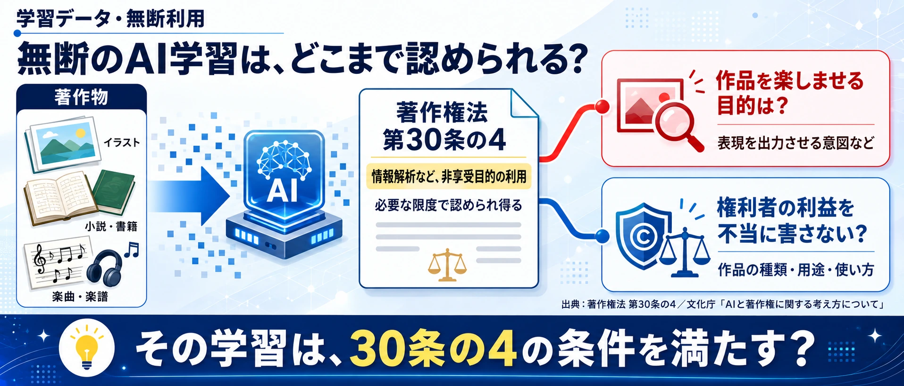
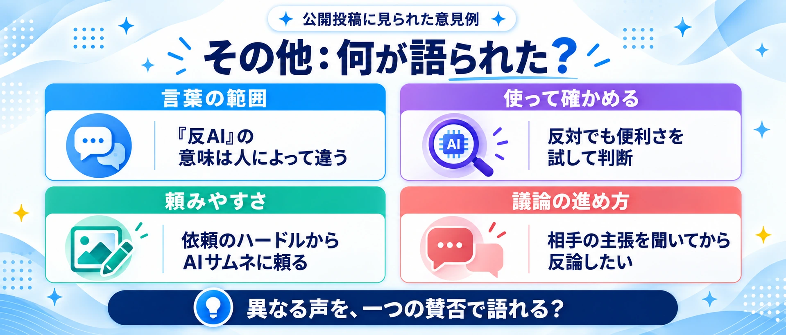

詳しい論点 01 / 学習・データ
📚 学習データ・無断利用
この論点について、何を知りたいですか？
疑問を押すと、要点と一次資料が切り替わります。
資料で確認できること
「無断」だけで、違法かどうかは決まりません。
著作権法30条の4の条件に当てはまるか、利用の目的や方法などを分けて確認します。文化庁は2024年3月公表の考え方で、その時点では関連する判例・裁判例の蓄積がないとして整理しています。
創作の権利を守るため、生成AIにはどこまでルールが必要か？
SEARCH GUIDE
検索の多い疑問を選ぶと、資料で確認できる要点がここに表示されます。
元の反応マップや本文も、このページ内で続けて読めます。
詳しい論点 01 / 学習・データ
疑問を押すと、要点と一次資料が切り替わります。
資料で確認できること
著作権法30条の4の条件に当てはまるか、利用の目的や方法などを分けて確認します。文化庁は2024年3月公表の考え方で、その時点では関連する判例・裁判例の蓄積がないとして整理しています。
公式資料確認：2026年9月28日 ／ 法律相談ではなく、公開資料とSNS反応の整理です。
生成AIと著作権の問題は、AIが文章・画像・音楽などを学習したり作り出したりする際に、既存の著作物をどこまで無断で使ってよいかという論点です。著作権法第30条の4は、著作物を「思想又は感情の享受を目的としない」利用であれば、原則として権利者の許諾なく使えると定めています。
著作権法そのものは変わっていません。政府がまとめてきたのは、この条文をどう解釈するかという「考え方」と、AI事業者に情報開示を求める任意のルール「プリンシプル・コード」までで、法律の改正には至っていません。
生成AIの急速な普及に伴い、既存の著作物が無断でAIの学習に利用されているのではないかという懸念がクリエイターや権利者団体から強まりました。一方でAI開発・提供事業者からは、学習段階の利用を過度に制限すると技術革新や国際競争力が損なわれるとの声もあり、権利者・事業者・利用者それぞれの立場から議論が続いています。
文化庁と内閣府が別々に検討を進めてきました。文化庁は既存の著作権法（特に第30条の4）の解釈を整理し、内閣府の検討会はAI法の制定や、AI事業者に学習データの出所開示を求める任意ルール「プリンシプル・コード」づくりを進めています。どちらも著作権法そのものを書き換えるものではありません。
文化審議会著作権分科会が、AIの学習段階での著作物利用について著作権法第30条の4の適用範囲を整理し公表しました。学習のための利用は原則対象外ですが、学習データの創作的表現をそのまま出力させる目的が併存する場合などは対象外になりうるとしています。
出典: 文化庁「AIと著作権に関する考え方について」（令和6年3月15日）内閣府「AI時代の知的財産権検討会」が、開発・学習段階と生成・利用段階に分けて著作権法上の課題を整理した中間とりまとめを公表しました。
出典: 内閣府「AI時代の知的財産権検討会 中間とりまとめ」（2024年5月）AI技術全般の研究開発・活用を推進する法律（AI法）が公布されました。著作権法とは別の法律で、この後まとまる「プリンシプル・コード」の根拠になっています。
出典: e-Gov法令検索「人工知能関連技術の研究開発及び活用の推進に関する法律」（令和七年法律第五十三号、2025年6月4日公布）内閣府検討会（第10回）で、AI事業者に学習データの出所などの開示を求める「プリンシプル・コード」案が事務局から示されました。開示は義務ではありません。実施するか、しない場合は理由を説明する「コンプライ・オア・エクスプレイン」方式が採られており、この後パブリックコメントにかけられました。
出典: 内閣府「AI時代の知的財産権検討会」第10回議事録（2025年12月12日開催）プリンシプル・コード案に寄せられた2,161件の意見（うち法人・団体99件）が報告されました。新聞・出版・放送・音楽の権利者団体は開示義務の強化を求め、AI事業者側の業界団体（BSA）は開示義務そのものに反対するなど、意見が分かれています。
出典: 内閣府「AI時代の知的財産権検討会」第12回議事録（2026年4月23日開催）／同 第11回議事録（2026年4月21日開催）政府の知的財産推進計画に、著作権法の対象外である声・作風の模倣についてパブリシティ権や不正競争防止法での対応を「引き続き議論」する方針と、プリンシプル・コードの普及を進める方針が盛り込まれました。いずれも具体的な法改正は伴っていません。一次資料で確認できた範囲では、これが最も新しい動きです。
出典: 内閣府「知的財産推進計画2026」（2026年6月決定）生成AIと著作権をめぐっては、著作権法そのものと、その解釈を示した「考え方」、AI事業者向けの任意ルール「プリンシプル・コード」が並行して存在します。どれについての話かを区別しないと、賛否の理由がかみ合わなくなります。
このページで未確認のこと
AI生成物の著作権を直接扱った日本の確定判例は確認できていません。プリンシプル・コードの届出（コンプライ・オア・エクスプレイン）を実際に行った事業者の一覧も、本資料確認では確かめられていません。
「違法」か「合法」かという二択で判断せず、確定した法律の条文なのか、その解釈を示した考え方なのか、事業者の任意ルールなのかを区別して読む必要があります。
生成AIによる著作物の利用・学習をどこまで認めるべきか（生成AIと著作権）
Yahoo!リアルタイム検索で集めた公開投稿のサンプルです。社会全体の世論調査ではありません。
収集期間 2026-06-22〜2026-10-06／収集5175件・意見3353件（この図の母数）／更新 2026-10-06
山を押すと、その論点の図解と、賛成・反対それぞれの投稿が読めます
山を押すと、その論点へ移ります（面積＝強く語られた投稿の数）
マス目100個が、いま見ている立場の全部です。 色つきのマスの数が、そのまま割合（％）になります。
件数

841件（25.1%） 山の高さ：強い表現31.9%
立場の内訳は、この論点の全件で数えています
立場ごとに、その立場の中でこの論点が占める割合
一次資料と照らした結果
資料との照合
この論点に関わる資料にあるのに、SNSにないこと：語られていない争点2件 ページ下の「資料にあるのに、SNSにないこと」で読む
818件（24.4%） 山の高さ：強い表現15.5%
立場の内訳は、この論点の全件で数えています
立場ごとに、その立場の中でこの論点が占める割合
この論点に関わる資料にあるのに、SNSにないこと：立場をこえて同じ心配1本 ページ下の「資料にあるのに、SNSにないこと」で読む
643件（19.2%） 山の高さ：強い表現26.8%
立場の内訳は、この論点の全件で数えています
立場ごとに、その立場の中でこの論点が占める割合
一次資料と照らした結果
資料との照合
この論点に関わる資料にあるのに、SNSにないこと：立場をこえて同じ心配2本・語られていない争点1件 ページ下の「資料にあるのに、SNSにないこと」で読む
409件（12.2%） 山の高さ：強い表現30.0%
立場の内訳は、この論点の全件で数えています
立場ごとに、その立場の中でこの論点が占める割合
一次資料と照らした結果
資料との照合
この論点に関わる資料にあるのに、SNSにないこと：語られていない争点1件 ページ下の「資料にあるのに、SNSにないこと」で読む

260件（7.8%） 山の高さ：強い表現13.7%
立場の内訳は、この論点の全件で数えています
立場ごとに、その立場の中でこの論点が占める割合
243件（7.2%） 山の高さ：強い表現14.2%
立場の内訳は、この論点の全件で数えています
立場ごとに、その立場の中でこの論点が占める割合
一次資料と照らした結果
資料との照合
139件（4.1%） 山の高さ：強い表現15.6%
立場の内訳は、この論点の全件で数えています
立場ごとに、その立場の中でこの論点が占める割合
一次資料と照らした結果
資料との照合
この論点に関わる資料にあるのに、SNSにないこと：立場をこえて同じ心配1本 ページ下の「資料にあるのに、SNSにないこと」で読む
🔍 資料にしかない話
無断で自分の作品をAIに学習されたと考える権利者は、著作権侵害が認められれば、AI生成物の廃棄請求や、一定の場合には学習用データセットからの除去請求を行える可能性がある。「無断で使われたら泣き寝入りするしかない」という認識でいる人にとっては、実際に取れる手段が想定より残っている。
集めた投稿での件数：0件（意見3353件のうち）／いちばん近い論点：学習データ・無断利用
「廃棄」「除去請求」の語での一致は1件あるが、米カリフォルニア州でのアンソロピック社に対する別訴訟の報道で、日本の著作権法の解釈に基づく権利者の救済手段への言及ではないため除外。「差止め」まで広げると1件（AI生成物利用者側の炎上リスクとしての言及）が加わるが、権利者が行使できる救済手段としての言及ではなく除外。廃棄請求・データセットからの除去請求という具体的な手段そのものへの言及は0件。2026-09-20: 新規272件（意見）を同じ条件語で再検索。関連投稿で「廃棄」に1件ヒットしたが意見ではなく（ニュース共有）、内容も書籍が物理的に廃棄されたという別文脈のため対象外。意見側の新規一致なし、母数のみ更新。2026-09-29: 新規281件（意見）を同じ条件語で再検索し、新規一致なし。母数のみ更新。2026-10-06: 新規270件（意見）を同じ条件語で再検索し、新規一致なし。母数のみ更新。2026-10-07: 9月5日の回を判定し直したため、母数を3,353件へ更新。新たに意見になった14件を同じ条件語で再検索し、新規一致なし。
一次資料
無断でAIに声を模倣された実演家は、著名性の要件を満たせばパブリシティ権で対抗できる可能性があるが、要件のハードルが高く、若手・中堅の実演家ほど法的な対抗手段を持ちにくい。著作権法には声そのものを直接保護する規定がないため、この空白は著作権法の改正では埋まらない。
集めた投稿での件数：0件（意見3353件のうち）／いちばん近い論点：クリエイター保護・権利
「パブリシティ」の語での一致は4件あるが、いずれもパブリシティ権と著作権の混同への指摘や特定の報道・判決の内容整理であり、著名性の要件が若手・中堅実演家を保護から実質的に排除しているという論点への言及は0件。2026-09-20: 新規272件（意見）を同じ条件語で再検索。新規の一致なし、母数のみ更新。2026-09-29: 新規281件（意見）を同じ条件語で再検索し、新規一致なし。母数のみ更新。2026-10-06: 新規270件（意見）を同じ条件語で再検索し、新規一致なし。母数のみ更新。2026-10-07: 9月5日の回を判定し直したため、母数を3,353件へ更新。新たに意見になった14件を同じ条件語で再検索し、新規一致なし。
一次資料
プリンシプル・コードを受け入れたAI事業者は、電子透かしやC2PA等の技術で学習データの出所や生成物の来歴を示す措置を検討することが期待される。ただし義務ではなく、実施しない場合は理由を説明すればよい「コンプライ・オア・エクスプレイン」の任意の枠組みにとどまる。
集めた投稿での件数：0件（意見3353件のうち）／いちばん近い論点：法制度・規制整備
「電子透かし」「C2PA」「来歴」の語での一致は8件あるが、すべて音楽生成AI「Suno」が自社製品に電子透かしを導入したという個別企業のニュースへの反応で、プリンシプル・コードが求める透明性確保の技術的措置という政府の政策枠組みへの言及ではないため除外。2026-09-20: 新規272件（意見）を同じ条件語で再検索。新規の一致なし、母数のみ更新。2026-09-29: 新規281件（意見）を同じ条件語で再検索し、新規一致なし。母数のみ更新。2026-10-06: 新規270件（意見）を同じ条件語で再検索し、新規一致なし。母数のみ更新。2026-10-07: 9月5日の回を判定し直したため、母数を3,353件へ更新。新たに意見になった14件を同じ条件語で再検索し、新規一致なし。
一次資料
自作品をAI学習から守りたい権利者が、robots.txtへの記載や利用規約への明示でオプトアウトを表明しても、それを尊重しないクローラーには効かず、別サイトへ転載された作品がそこから収集されることも防げない。「オプトアウトを表明すれば守られる」という認識では、実際の防御力を過大評価する可能性がある。
集めた投稿での件数：0件（意見3353件のうち）／いちばん近い論点：学習データ・無断利用
「robots.txt」「クローラ」「オプトアウト」の語での一致は4件あるが、企業版サービスの契約上のオプトアウトやEU方式の集中管理オプトアウトへの言及、robots.txt等の存在を紹介するにとどまる投稿、オプトアウトが機能していないという抽象的な不満にとどまり、クローラーが記載を無視する具体的な仕組みや転載経由での回避不可能性への言及は0件。2026-09-20: 新規272件（意見）を同じ条件語で再検索。新規の一致なし、母数のみ更新。2026-09-29: 新規281件（意見）を同じ条件語で再検索し、新規一致なし。母数のみ更新。2026-10-06: 新規270件（意見）を同じ条件語で再検索し、新規一致なし。母数のみ更新。2026-10-07: 9月5日の回を判定し直したため、母数を3,353件へ更新。新たに意見になった14件を同じ条件語で再検索し、新規一致なし。
一次資料
それでも結論が分かれる理由：同じ『政策対応が遅い』という不満から、規制・制限強化支持側は『だからこそ韓国のように迅速で厳格な法規制を急ぐべきだ』と結論づけ、推進・活用支持側は『だからこそインドのように迅速な規制緩和・活用推進を急ぐべきだ』と結論づける。急ぐべき方向が正反対に分かれる。
関わる論点：法制度・規制整備・技術競争・推進
それでも結論が分かれる理由：同じ『レッテルで誤解されている』という不満から、規制・制限強化支持側は『反AIという語をやめ、無断学習の一部データセットの違法性のみに反対しているという実際の主張（規制派・生成規制論）で呼んでほしい』と求め、推進・活用支持側は『AI利用者を一律に盗人・非人道的と決めつけず、適法な利用として尊重してほしい』と求める。誤解の中身と、求める再定義の内容が逆向きになる。
関わる論点：法制度・規制整備・利用者モラル・倫理
SNS上の意見の推移
2026年10月6日時点2026年10月6日の収集分では、生成AIと著作権に関する意見の投稿のうち、規制・制限強化支持が55.2%でした。推進・活用支持は24.8%、中立・情報は20.0%です。
8月3日から10月6日までの9回の収集を、日付順に並べました。「中立・情報」は8月3日の16.6%から20.0%へ、3.4ポイント上がりました。「規制・制限強化支持」は8月3日の58.1%から55.2%へ、2.9ポイント下がりました。どちらも、ぶれの範囲に収まる差です。途中には、9月29日から10月6日にかけて「中立・情報」が9.9ポイント下がった回もあり、一直線の変化ではありません。
前回（9月29日）から今回（10月6日）にかけて、「中立・情報」は29.9%から20.0%へ、9.9ポイント下がりました。ぶれの範囲を超える差です。
| 収集日 | 意見数 | 規制・制限強化支持規制 支持 | 推進・活用支持推進 支持 | 中立・情報中立・ 情報 |
|---|---|---|---|---|
| 8月3日 | 277件 | 58.1%（161件） | 25.3%（70件） | 16.6%（46件） |
| 8月9日 | 265件 | 61.9%（164件） | 19.2%（51件） | 18.9%（50件） |
| 8月16日 | 300件 | 52.0%（156件） | 22.3%（67件） | 25.7%（77件） |
| 8月23日 | 277件 | 54.9%（152件） | 24.5%（68件） | 20.6%（57件） |
| 8月31日 | 310件 | 51.6%（160件） | 24.5%（76件） | 23.9%（74件） |
| 9月5日 | 296件 | 58.8%（174件） | 18.9%（56件） | 22.3%（66件） |
| 9月20日 | 272件 | 59.6%（162件） | 19.5%（53件） | 21.0%（57件） |
| 9月29日 | 281件 | 53.0%（149件） | 17.1%（48件） | 29.9%（84件） |
| 10月6日 | 270件 | 55.2%（149件） | 24.8%（67件） | 20.0%（54件） |
2026年10月6日の収集分では、生成AIと著作権に関する意見の投稿のうち、主な論点が最も多いのは「学習データ・無断利用」の26.1%でした。続いて「利用者モラル・倫理」が26.1%、「法制度・規制整備」が24.5%です。
8月3日から10月6日までの9回の収集を、日付順に並べました。主な論点が「学習データ・無断利用」の投稿は、8月3日の32.8%から26.1%へ、6.7ポイント下がりました。ぶれの範囲に収まる差です。主な論点が「クリエイター保護・権利」の投稿は、8月3日の16.8%から10.7%へ、6.1ポイント下がりました。ぶれの範囲を超える差です。
前回（9月29日）から今回（10月6日）にかけて、主な論点が「学習データ・無断利用」の投稿は、29.8%から26.1%へ、3.7ポイント下がりました。ぶれの範囲に収まる差です。
| 収集日 | 意見数 | 学習データ・無断利用学習 データ | クリエイター保護・権利クリエ イター | 法制度・規制整備法制度・ 規制 | 技術競争・推進技術 競争 | 利用者モラル・倫理モラル・ 倫理 | AI生成物の権利・創作性AI生成物 の権利 |
|---|---|---|---|---|---|---|---|
| 8月3日 | 256件 | 32.8%（84件） | 16.8%（43件） | 23.4%（60件） | 2.7%（7件） | 20.3%（52件） | 3.9%（10件） |
| 8月9日 | 245件 | 24.1%（59件） | 15.9%（39件） | 16.3%（40件） | 5.7%（14件） | 30.6%（75件） | 7.3%（18件） |
| 8月16日 | 260件 | 30.4%（79件） | 10.4%（27件） | 18.5%（48件） | 5.0%（13件） | 27.7%（72件） | 8.1%（21件） |
| 8月23日 | 247件 | 25.9%（64件） | 8.5%（21件） | 20.6%（51件） | 6.1%（15件） | 30.4%（75件） | 8.5%（21件） |
| 8月31日 | 282件 | 21.6%（61件） | 15.2%（43件） | 20.2%（57件） | 5.0%（14件） | 27.3%（77件） | 10.6%（30件） |
| 9月5日 | 281件 | 27.8%（78件） | 11.7%（33件） | 16.7%（47件） | 3.9%（11件） | 30.6%（86件） | 9.3%（26件） |
| 9月20日 | 257件 | 28.4%（73件） | 12.1%（31件） | 19.8%（51件） | 5.8%（15件） | 25.7%（66件） | 8.2%（21件） |
| 9月29日 | 262件 | 29.8%（78件） | 13.7%（36件） | 21.0%（55件） | 1.9%（5件） | 25.6%（67件） | 8.0%（21件） |
| 10月6日 | 261件 | 26.1%（68件） | 10.7%（28件） | 24.5%（64件） | 4.6%（12件） | 26.1%（68件） | 8.0%（21件） |
生成AIと著作権をめぐる投稿には、法律の条文名や政府資料を挙げて語られるものが目立ちます。名前が本物でも、書いてある中身まで正確とは限りません。ここでは投稿でよく見かける言い分のうち、公表資料で当否を確かめられるものを6つ取り出し、文化庁の考え方、内閣府の検討会資料、著作権法の条文、国会答弁に当たりました。照合したのは2026年9月19日です。
「AIによる無断学習は、著作権法上、常に著作権侵害にあたる」該当した投稿 2件
文化審議会著作権分科会法制度小委員会「AIと著作権に関する考え方について」（令和6年3月15日） ／ e-Gov法令検索 著作権法 第30条の4
「学習データの出所開示をAI事業者に法律で義務づける制度は、日本にはまだ無い」該当した投稿 2件
「AI事業者に、学習データの利用について対価の支払いを義務づける法律は無い」該当した投稿 2件
「無断でAIに学習された作品の作者は、対抗する手段を持たない」該当した投稿 2件
内閣府「AI時代の知的財産権検討会『中間とりまとめ』－権利者のための手引き－」（2024年11月） ／ 文化庁「AIと著作権に関する考え方について」（救済手段の整理箇所）
「AIが生成した作品にも、通常の著作物と同じように著作権が認められる」該当した投稿 2件
「生成AIへの法規制はほとんど進んでおらず、野放し状態にある」該当した投稿 2件
e-Gov法令検索「人工知能関連技術の研究開発及び活用の推進に関する法律」（令和七年法律第五十三号、2025年6月4日公布）
件数の数え方について。キーワードだけで拾うと、無関係な文脈で同じ語を使った投稿も混ざります。ここでは候補となった投稿を1件ずつ本文で確認し、実際にその言い分を述べている投稿だけを数えました（合わせて12件）。規制に賛成か推進に賛成かは問うていません。投稿の本文はこの節には載せず、件数と照合結果だけを示しています。
各論点でどんな声が上がっているか、編集部が代表的な投稿を選びました。ここに挙げた投稿は考え方の一例で、全体の賛否の割合を表すものではありません。埋め込みが表示されないときは、投稿へのリンクからXで見られます。
授業・探究学習で使う
賛成・反対それぞれの理由を、まず3つずつ。メリット・デメリットを自分の言葉で書き出してから読み進めてください。
著作権法第30条の4は、鑑賞して楽しむこと自体を目的としない利用であれば、その必要な範囲でAI学習に使ってよいという立て付けになっている。学習した結果を誰かが鑑賞目的で使ったとしても、学習という行為自体が直ちに違法になるとは限らない。 → 論点「学習データ・無断利用」を見る
政府は「世界で最もAIを開発・活用しやすい国」を目標に掲げている。学習や活用の場面に慎重すぎるルールを重ねれば、掲げた目標そのものと矛盾しかねない、という立場になる。 → 論点「技術競争・推進」を見る
生成AIを下描きや構成のたたき台として使い、そこに人の手で試行錯誤を重ねて作品に仕上げるクリエイターもいる。そうした作品まで一律に「AI製だから保護されない」と扱われれば、人の創作的寄与そのものが評価されなくなる。 → 論点「AI生成物の権利・創作性」を見る
著作権法には声そのものを直接保護する規定がなく、対抗できるパブリシティ権にも著名性という高いハードルがある。若手や中堅の実演家ほど、無断でAIに声を模倣されても法的な後ろ盾を持ちにくい。 → 論点「クリエイター保護・権利」を見る
学習データの出所開示を求めるプリンシプル・コードは、事業者が実施しない場合に理由を説明すれば足りる任意の枠組みにとどまる。日本新聞協会などはこの状態を踏まえ、応じない事業者には法制化の検討まで政府に求めている。 → 論点「法制度・規制整備」を見る
日常的に生成AIへ触れている学生ほど、著作権法上どこまでが利用者の責任になるのかを教わる機会がまだ乏しい。国会でも知財教育の強化が必要だという指摘が出ており、モラルは自然に身につくと期待するだけでは足りないという考え方につながる。 → 論点「利用者モラル・倫理」を見る
文化庁「AIと著作権に関する考え方について」（文化審議会著作権分科会法制度小委員会、令和6年3月15日）：AI開発・学習段階での著作物利用について、権利者・事業者・利用者それぞれの懸念と、著作権侵害になりうる場合の線引きを確かめられる。
e-Gov法令検索（デジタル庁）著作権法 第30条の4：AI学習が原則として著作権者の許諾なく行える根拠となる条文と、権利者の利益を不当に害する場合は適用されないというただし書きを確かめられる。
内閣府知的財産戦略推進事務局「生成AIの適切な利活用等に向けた知的財産の保護及び透明性に関するプリンシプル・コード」：学習データの出所開示等を事業者に求める現行の枠組みが、実施しない場合は理由の説明で足りる任意の「コンプライ・オア・エクスプレイン」にとどまっていることを確かめられる。
生成AIによる著作物の学習は、権利者の許諾を必要とする仕組みに変えるべきか。
学習データの出所開示は、企業の任意にとどめるべきか、法律で義務化すべきか。
人の手が加わった生成AI作品にも、人間だけで作った作品と同じ著作権を認めるべきか。
読む前に理由を書き出す→ページで確かめる→自分の理由と比べる。
判断の入口
生成AIをめぐる著作権の問題は、「学習に使うとき」「画像や文章を作るとき」「公開・販売するとき」で、考えるポイントが変わります。まず、いま気になっているのがどの場面かを確かめてください。
著作物の表現を楽しませる目的がない情報解析には、30条の4が適用され得ます。一方、目的や収集方法など個別事情で見方が変わります。
（「学習なら常に合法」と断定するものではありません。）
特定の作品に似た出力を生む場合、どの表現が共通しているか、どのように生成されたかを区別して考える必要があります。
（このページは、個別の生成物が著作権侵害に当たるかを判断するものではありません。）
生成物を公開・販売する段階では、既存著作物との類似性と依拠性が認められるかが問題となり得ます。
（最終的な評価は、個別の事情を踏まえて裁判所が判断します。）
判断の根拠は、文化庁「AIと著作権に関する考え方について」と、内閣府「AI時代の知的財産権検討会 中間とりまとめ」です。
ここまでの問いと資料を踏まえ、あなたが最も重く見る論点を選んでください。
1あなたが最も気になる論点をタップ （全2問）
※ サイト参加者の集計であり、世論調査ではありません。回答と、24時間の重複防止用に一方向変換した接続元情報をサーバーに保存します。
| 分類 | AI イラスト 問題 | AI イラスト 良い OR 便利 OR 助かる | AI 活用 メリット | AI 著作権侵害 | AI 規制 やりすぎ OR 反対 | AI学習 無断 | AI絵 パクリ | 生成AI クリエイター | 生成AI 便利 | 生成AI 反対 | 生成AI 著作権 | 生成AI 規制 | 生成AI 賛成 | 合計 |
|---|---|---|---|---|---|---|---|---|---|---|---|---|---|---|
| 著作権厳格保護・クリエイターの権利回復を最優先 | 9 | 6 | 0 | 31 | 5 | 27 | 25 | 26 | 3 | 6 | 17 | 4 | 9 | 168 |
| AI技術推進・過度な規制は競争力を損なう | 1 | 0 | 0 | 0 | 10 | 1 | 0 | 1 | 0 | 3 | 5 | 10 | 3 | 34 |
| 法規制強化・ライセンス制度や許諾要件の整備を求める | 0 | 0 | 0 | 0 | 4 | 0 | 0 | 1 | 1 | 2 | 1 | 4 | 0 | 13 |
| 利用者モラル・クレジット表記や配慮の欠如を問題視 | 5 | 3 | 1 | 0 | 1 | 1 | 0 | 2 | 5 | 2 | 4 | 2 | 1 | 27 |
| 条件付き容認・オプトアウトや対価支払いで共存 | 0 | 2 | 0 | 0 | 0 | 0 | 0 | 0 | 0 | 2 | 1 | 1 | 3 | 9 |
| 実用主義・利便性重視で問題に深入りしない | 8 | 11 | 23 | 0 | 0 | 1 | 0 | 4 | 22 | 3 | 2 | 4 | 10 | 88 |
| その他・分類保留 | 13 | 17 | 15 | 0 | 18 | 9 | 0 | 6 | 8 | 20 | 9 | 13 | 8 | 136 |
| 分類 | 規制賛成 | 規制反対 | モラル重視 | 保留 | 合計 |
|---|---|---|---|---|---|
| 著作権厳格保護・クリエイターの権利回復を最優先 | 144 | 24 | 0 | 0 | 168 |
| AI技術推進・過度な規制は競争力を損なう | 0 | 34 | 0 | 0 | 34 |
| 法規制強化・ライセンス制度や許諾要件の整備を求める | 6 | 7 | 0 | 0 | 13 |
| 利用者モラル・クレジット表記や配慮の欠如を問題視 | 6 | 20 | 1 | 0 | 27 |
| 条件付き容認・オプトアウトや対価支払いで共存 | 0 | 8 | 0 | 1 | 9 |
| 実用主義・利便性重視で問題に深入りしない | 0 | 53 | 0 | 35 | 88 |
| その他・分類保留 | 7 | 18 | 0 | 111 | 136 |
選んだ論点
理由の分類・投稿例・資料は、この論点全体の内容です。
選んだ論点
理由の分類・投稿例・資料は、この論点全体の内容です。
選んだ論点
理由の分類・投稿例・資料は、この論点全体の内容です。
選んだ論点
理由の分類・投稿例・資料は、この論点全体の内容です。
編集部が選んだ投稿例です。この論点全体の賛否の割合を表すものではありません。
AI使用で評価は上がらないと断定
元の投稿をXで読む ↗技術は肯定しつつ自身の変化を語る
元の投稿をXで読む ↗選んだ論点
理由の分類・投稿例・資料は、この論点全体の内容です。
選んだ論点
理由の分類・投稿例・資料は、この論点全体の内容です。
編集部が選んだ投稿例です。この論点全体の賛否の割合を表すものではありません。
言語による創作と組み替えは別と主張
元の投稿をXで読む ↗プロンプト作成者に著作権があると主張
元の投稿をXで読む ↗選んだ論点
理由の分類・投稿例・資料は、この論点全体の内容です。
 憲法改正論議
憲法改正論議 自転車の青切符導入
自転車の青切符導入